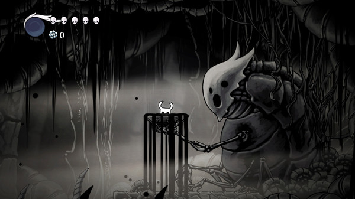
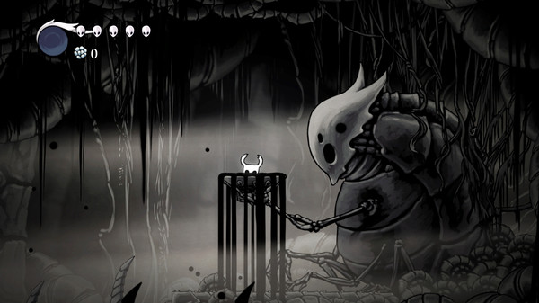

Descrição
Hollow Knight é uma aventura de ação 2D em estilo clássico que se desenrola em um vasto mundo interconectado. Explore cavernas sinuosas, cidades antigas e ermos mortais; lute contra criaturas contaminadas e faça amizade com insetos bizarros; e resolva mistérios ancestrais no coração do reino.
Requisitos de Sistema
Requisitos Mínimos
Requires a 64-bit processor and operating system
OS *: Windows 7 (64 bits)
Processor: Intel Core 2 Duo E5200
Memory: 4 GB RAM
DirectX: Version 10
Graphics: GeForce 9800GTX+ (1GB)
Storage: 9 GB available space
Additional Notes: 1080p, 16:9 recommended
Requisitos Recomendados
Requires a 64-bit processor and operating system
OS: Windows 10 (64bit)
Processor: Intel Core i5
Memory: 8 GB RAM
Graphics: GeForce GTX 560
DirectX: Version 11
Storage: 9 GB available space
Additional Notes: 1080p, 16:9 recommended